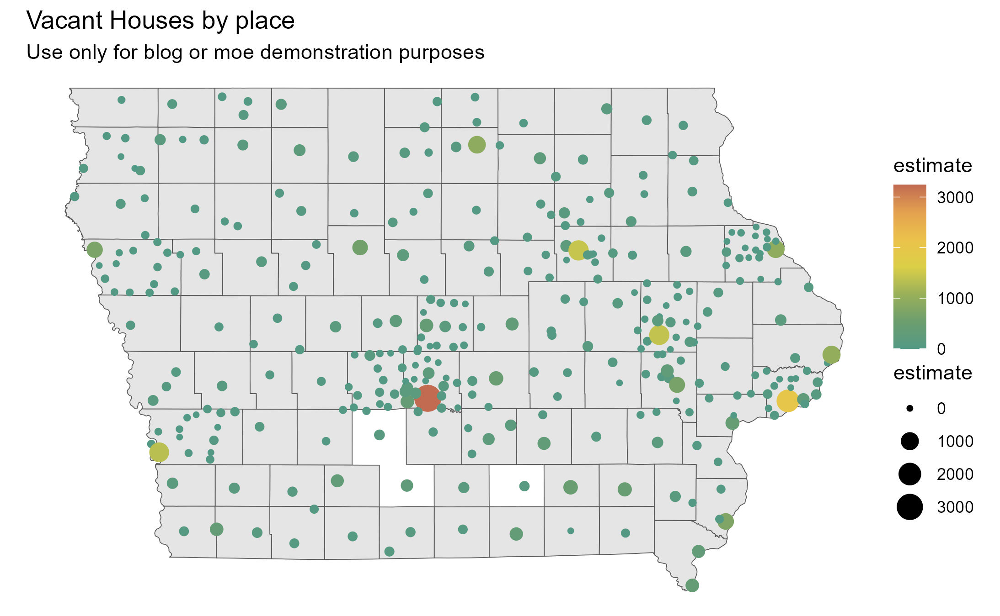
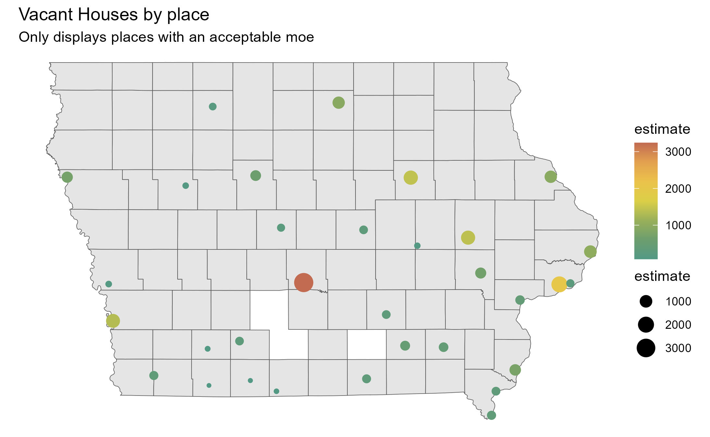
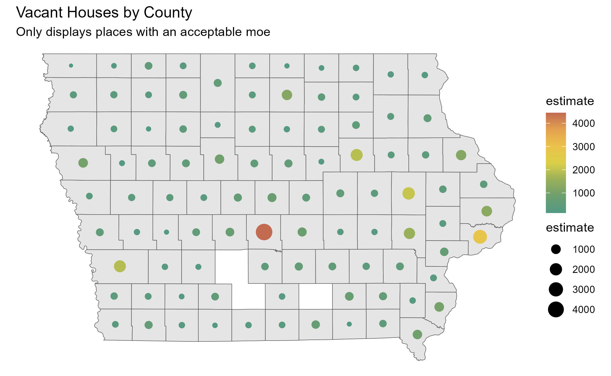
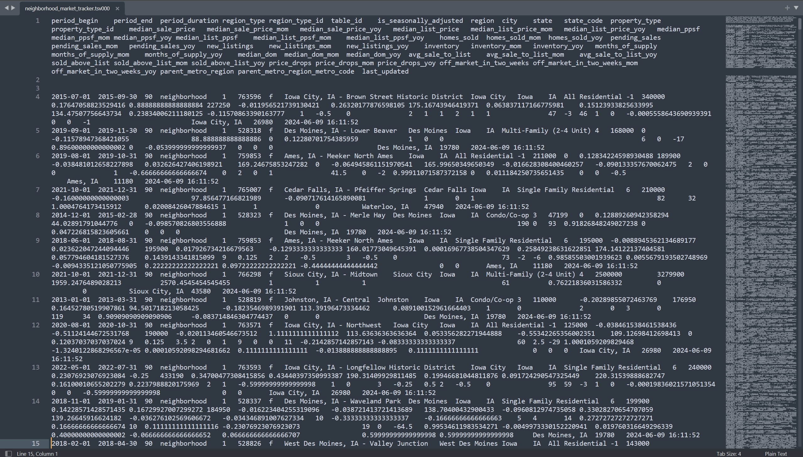

Plotting vacant housing units
First, I plotted vacant housing data for all 330 target places we want to track in Iowa.
I then calculated the acceptable Margin of Error (MOE) for vacant housing units, and plotted those places.
Given that there was extremely limited data on vacant housing units by place with an acceptable MOE, I then found the county data on vacant housing units with an acceptable MOE. This time, there were only three counties with unacceptable MOEs.

Redfin Data
After spending time looking for and web scraping Redfin data, I was able to access a 6.8 GB document on realtor data in the US by place (city) between 2012 and May 2024.
This data is good to have, so now I’m working on cleaning the data.

I am using Sublime Text to view and edit this document. Sublime Text is specifically designed to handle large text files, which makes this a good editor for this specific dataset. Between VS Code, Excel, and RStudio, this is the only editor that did not immediately crash when I tried to load the file. It did take approximately 3 hours to load, but overall, I am happy with this editor’s capabilities.

Encoding
We have encoded 25 cities completely as of 6/14/2024.
- 42% of CIRTPA
- 8% of Iowa cities included in the zoning guide
- .25% of cities in the world*
At this rate, we would finish encoding the world in 23 years.
*Cities in the world defined as having a population of over 50,000. We are not using that definition for cities in Iowa.
Collecting GIS Data
This week, we gathered basic data for future analysis in ArcGIS Pro. As of now, we can use this information to make comparisons between cities and gain a general overview of city demographics and economics. The data collected is from the ACS.
Data Collected

- Employment status
- Armed Forces status
- Median income
- Median age by sex
- Population
- Median Gross Rent
- Median monthly housing costs
- For those with and without mortgages
- Housing occupancy status
Examples:


beginning stages of a housing analyses.

Let’s take a look at the future for Ames home-owners.
It appears that suburban areas of Ames have been growing faster in household income then “urban” area’s. But this analysis begs a new question, is the cost of rents increasing in the same area’s? (later will calculate cost of living)
We see a different picture when it comes to rent cost. Rent costs seemed to grow evenly across Ames from 2010 - 2020, but 2020-2022 costs around Iowa State have increased a noticeably faster rate then the suburban areas… I started college in 2020!
These two trends bring up many questions about the Ames renting market.
A question this may bring up “what is Ames and household income going to look like in 2030?”
By looking at my household income forecast map we can see that its likely that the suburban area’s will continue to grow at a faster rate than areas around ISU.
Where to from here?
This is just a start of a much needed furthur analysis of the city of Ames housing market, but I will create a forecast rent costs map that goes tell year 2030, in order to continue to compare these two variables. I also plan to find an value for overall cost of living and overall personal income and use those variables to determine what area’s will be affordable in the future and what area’s will likely not be affordable for the average person.